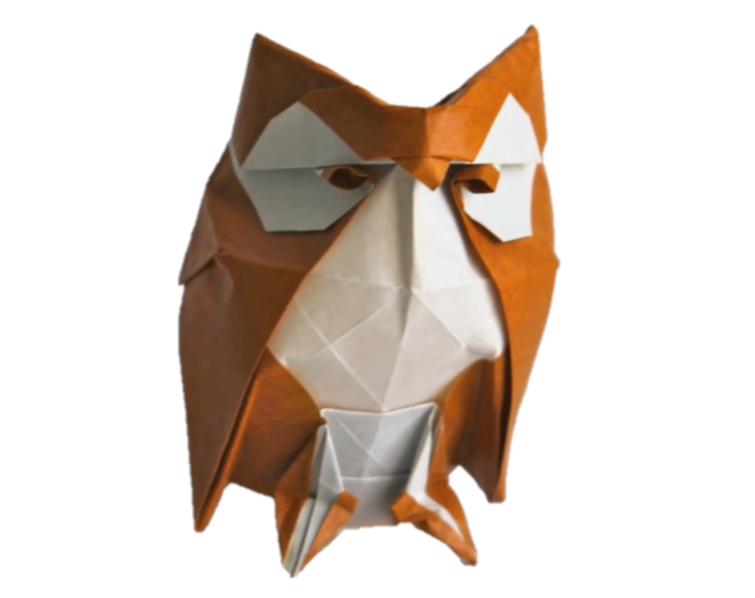

Interesting facts about pandas
- Pandas eat consistently for 12-14 hours a day.
- Baby pandas are born pink and measure about 15cm.
- bamboo counts for 99 percent of their diet.

Interesting facts about Cicadas
- Cicadas are harmless and can’t bite or sting.
- Swarming cicadas are very loud.
- The loud whirring or buzzing sound you hear is an all-male cicada chorus.
- cicadas have red eyes, but they can also have white, gray, blue, or multi-colored eyes.

Interesting facts about owls
- Many owls have asymmetrical ears. Their ears are located at different heights on their heads.
- An owl has 3 eyelids- one for blinking, one for sleeping and one for keeping its eyes clean.
- Owls have broad wings and very light bodies which makes them silent fliers.
- All species of Owls do not hoot. They make other sounds like screeching, whistling, growling, rattling, even barking and hissing.
Interesting facts about Rabbits
- Rabbits are very social creatures that live in groups.
- A rabbit’s teeth never stop growing! Instead, they’re gradually worn down as the rabbit chews on grasses and vegetables,meaning they never get too long.
- rabbits can turn their ears by 180 degrees, keeping a careful listen out for predators.

HTML
- Rabbits are very social creatures that live in groups.
- A rabbit’s teeth never stop growing! Instead, they’re gradually worn down as the rabbit chews on grasses and vegetables,meaning they never get too long.
- rabbits can turn their ears by 180 degrees, keeping a careful listen out for predators.